Istoricul sănătății publice
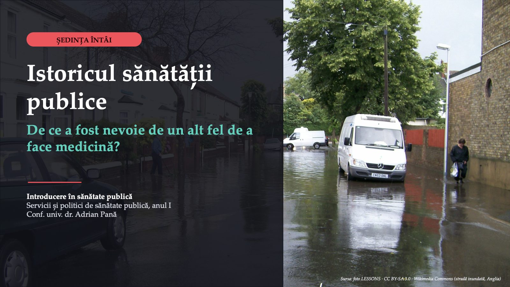
1 / 45Istoricul sănătății publice ascunde o întrebare: de ce a apărut, la un moment dat, nevoia unui alt fel de a face medicină? Începem cu un oraș inundat.
De ce a fost nevoie de un alt fel de a face medicină?
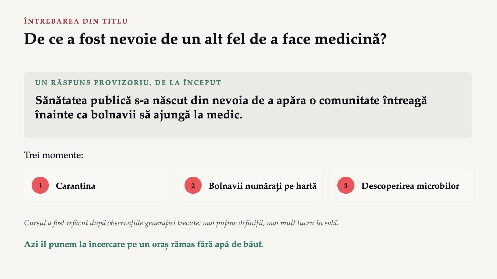
2 / 45Vă datorăm un prim răspuns de la început, nu la sfârșitul semestrului. Îl dăm în formă provizorie; ședința de azi îi spune povestea, iar ședința a doua îl rafinează.
Două ore, de la robinet la microbi
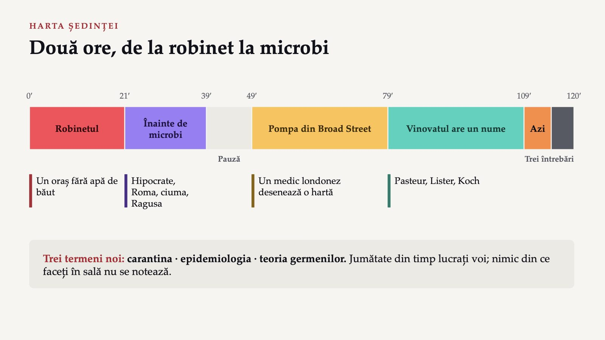
3 / 45Ședința are cinci părți. Jumătate din timp lucrați voi: votați, discutați în perechi, argumentați în tabere și ordonați evenimentele pe linia timpului. Nimic din ce faceți în sală nu se notează.
Apa de la robinet, după inundație
![SITUAȚIE CONSTRUITĂ PENTRU CURS Apa de la robinet, după inundație Un oraș românesc de mărime medie. După trei zile de ploi, râul a intrat în stația care pregătește apa. A doua zi, apa de la robinet e tulbure. Până la prânz, un medic de familie a primit trei copii cu diaree și vărsături. Cine trebuie să facă ceva acum și de unde știe ce să facă? Blocul C2 · vecini Ana
Ați văzut ce curge la robinet? Mihai
La noi la fel. O fierbem? Ioana
Cel mic are diaree. La cabinet, e al treilea copil azi. Scenă reconstituită; numele sunt fictive.](diapozitive/C01/004.jpg) 4 / 45
4 / 45Situația este construită pentru acest curs și nu descrie un eveniment real. Sunteți studenți, nu medici și nici funcționari. Nimeni nu știe încă dacă apa are vreo legătură cu copiii bolnavi.
Cine trebuie să acționeze primul?
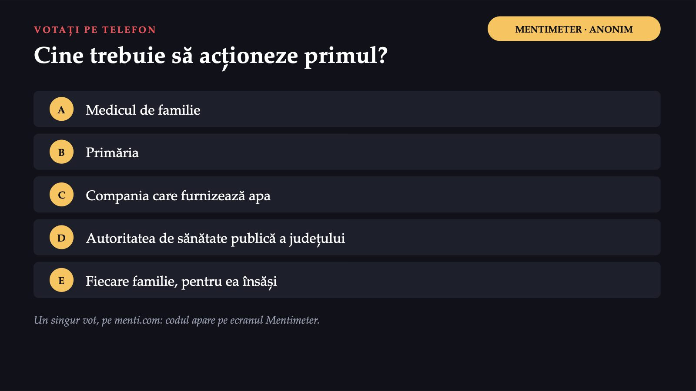
5 / 45O singură variantă, după prima impresie. Votul este anonim, iar rezultatele apar pe ecran imediat.
Niciunul nu ajunge singur
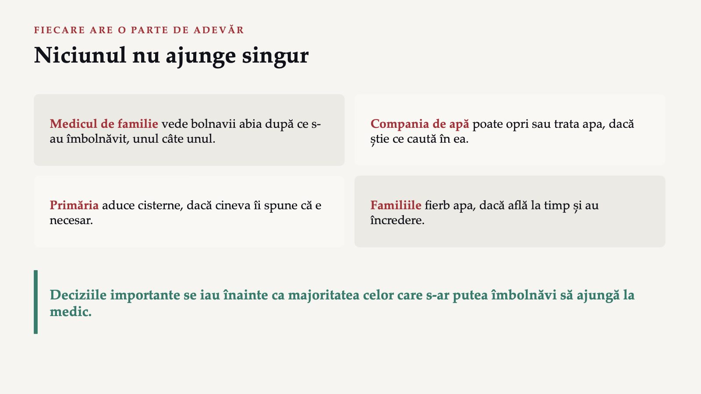
6 / 45De obicei, voturile se împart între mai multe variante, și pe bună dreptate: fiecare variantă are o parte de adevăr, dar niciuna nu rezolvă singură situația. Dacă orașul așteaptă să se umple sălile de așteptare, decizia vine prea târziu.
Ce trebuie să știe cineva, în prima oră, ca să decidă ce le spune oamenilor?
7 / 45Gândiți-vă la ce ar trebui să știe cine decide: despre apă, despre bolnavi, despre reguli și despre oameni.
Patru lucruri, niciunul evident
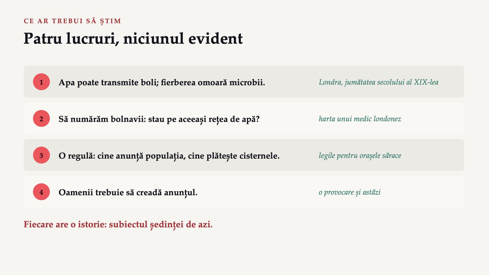
8 / 45Că apa poate transmite o boală gravă s-a arătat convingător abia la jumătatea secolului al XIX-lea, la Londra. Regulile despre cine anunță și cine plătește au apărut din legile scrise pentru orașele sărace ale aceluiași secol.
Un om sau un oraș întreg
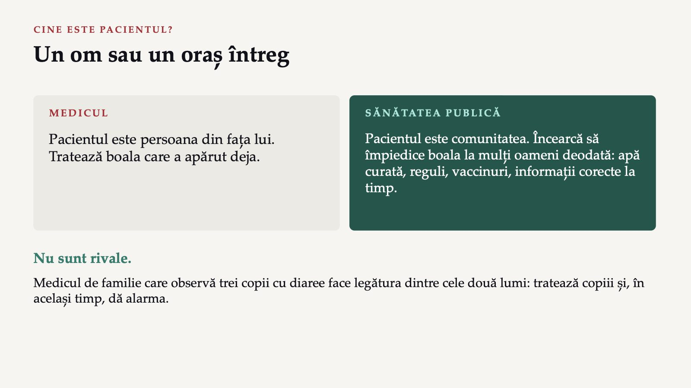
9 / 45Diferența nu ține de cât de bun este medicul, ci de cine este pacientul. Scăderea mortalității prin infarct și prin accident vascular cerebral a fost o realizare comună a medicinei clinice și a sănătății publice. Vaccinurile, antibioticele și medicamentele pentru tensiunea mare au adus îmbunătățiri mari în îngrijirea copiilor și în tratamentul bolilor infecțioase, al hipertensiunii și al diabetului.
Ce vă vine în minte când auziți „sănătate publică”?
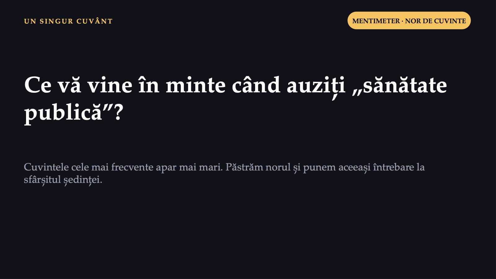
10 / 45Un singur cuvânt, primul care vă vine în minte. Îl comparăm la sfârșit cu al doilea nor.
2 500 de ani
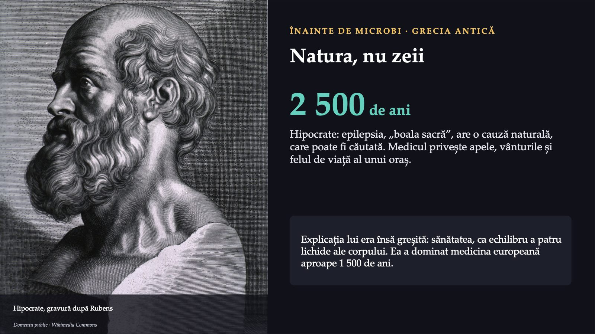
11 / 45Manualul de epidemiologie al centrelor americane pentru controlul bolilor plasează rădăcinile disciplinei în jurul anului 400 î.Hr. Teoria celor patru lichide era greșită, dar avea o logică internă coerentă.
600–900
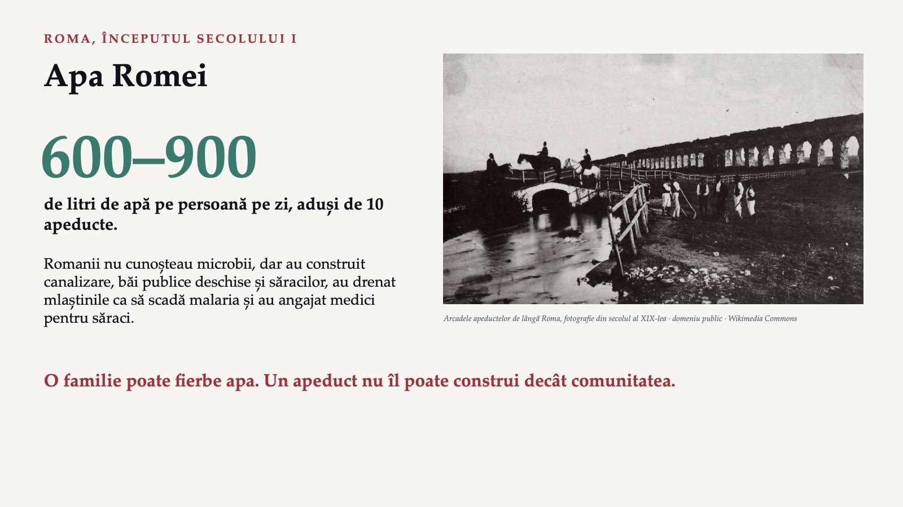
12 / 45Lecția privește direct orașul din povestea noastră: apa sigură și îndepărtarea apelor murdare cer o autoritate publică, bani comuni și reguli valabile pentru toți.
6 din 10
 13 / 45
13 / 45Astăzi știm sigur ce boală a fost: materialul genetic al bacteriei care provoacă ciuma a fost reconstituit din scheletele unor victime îngropate la Londra. Lecția despre frică și vinovați nu se limitează la Evul Mediu.
Carantina
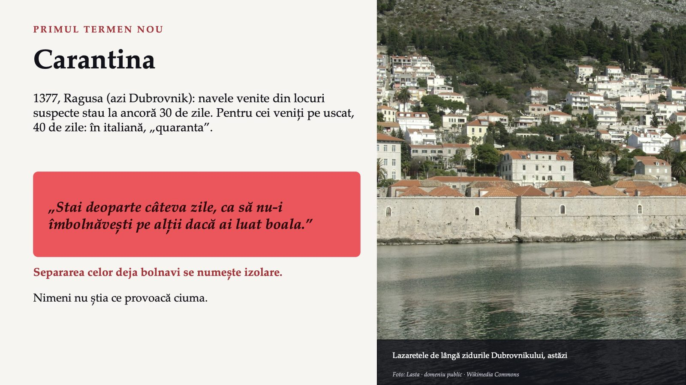
14 / 45Carantina înseamnă separarea, pentru o perioadă stabilită, a unor oameni care par sănătoși, dar care ar fi putut fi în contact cu o boală contagioasă. Ideea era corectă în esență: dacă ții separați, o vreme, oamenii care ar fi putut lua boala, scade numărul celor care o duc mai departe. Anul regulii de la Ragusa: 1377 în sursele istorice citate în notă; manualul lui Tulchinsky și Varavikova dă 1465, cu aproape un secol mai târziu. Anul nu este de reținut.
Ați fi oprit navele în port?
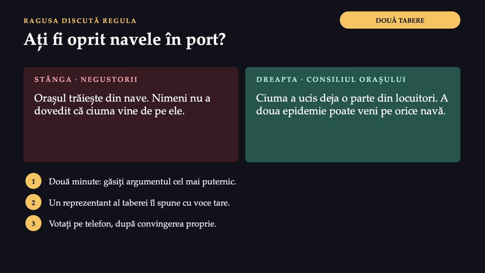
15 / 45Tabăra din stânga îi reprezintă pe negustori, tabăra din dreapta reprezintă consiliul orașului. La final, fiecare votează după convingerea proprie: ați fi adoptat regula?
Două argumente care se întâlnesc mereu
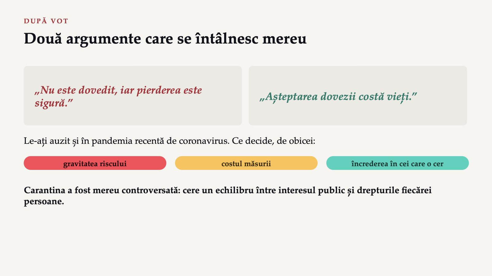
16 / 45Argumentul negustorilor și cel al consiliului se întâlnesc ori de câte ori o comunitate trebuie să decidă repede, fără să știe tot.
Zece minute de pauză
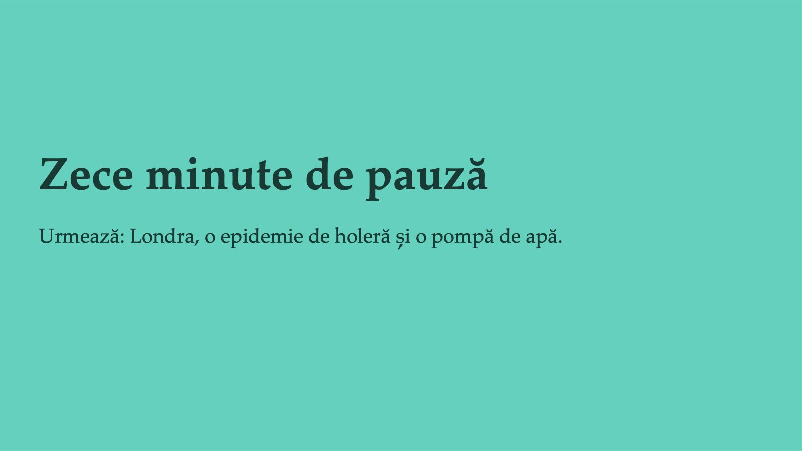
17 / 45Orașul care crește prea repede
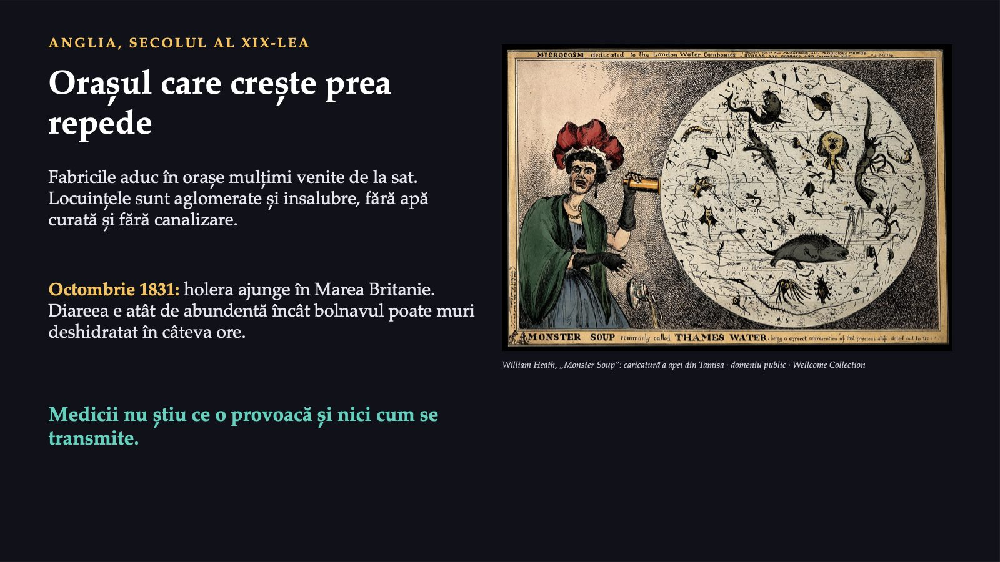
18 / 45Revoluția industrială a mutat în orașe mulțimi de oameni. Orașele au crescut atât de repede încât nu au putut asigura locuințe și servicii pentru noii lor locuitori.
Primii care au numărat morții
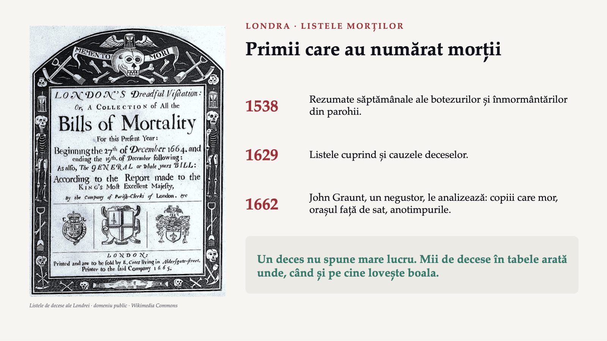
19 / 45Pentru ca cineva să observe că o boală lovește mai des într-un loc decât în altul, are nevoie de un lucru foarte simplu și foarte rar în istorie: o listă a morților.
Au redus aceste măsuri bolile?
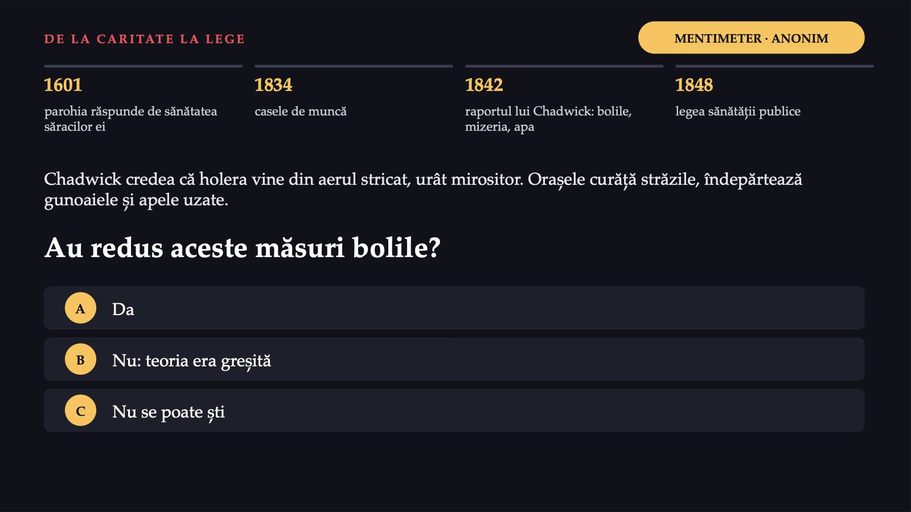
20 / 45Statul începea să-și asume o răspundere nouă: soarta celor care nu se puteau întreține singuri. Legea din 1848 a înființat un Consiliu General al Sănătății, preocupat de apă sigură și de drenaj.
Explicația era greșită. Măsurile au fost excelente.
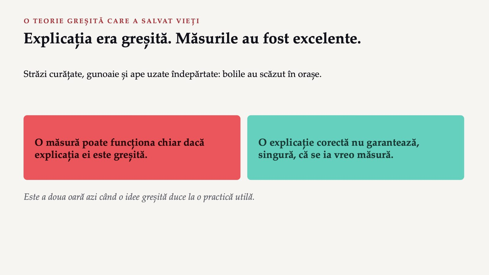
21 / 45Medicii vremii numeau aerul stricat miasmă. Ambele explicații au contribuit la sănătatea publică: cea prin microbi, prin cunoașterea agenților anume, iar cea prin aerul stricat, prin atenția acordată mediului și condițiilor de viață.
Harta unui medic
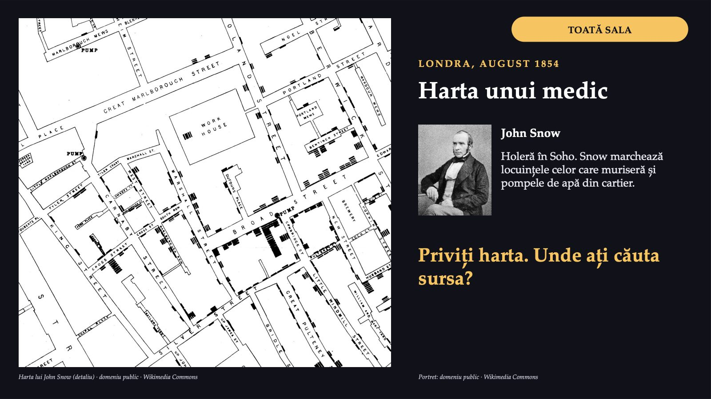
22 / 45În 1854, în timpul unei epidemii de holeră în cartierul Soho al Londrei, în jurul pieței Golden Square, medicul John Snow a marcat pe o hartă locuințele celor care muriseră și pompele de apă din cartier.
Morții erau în jurul unei singure pompe
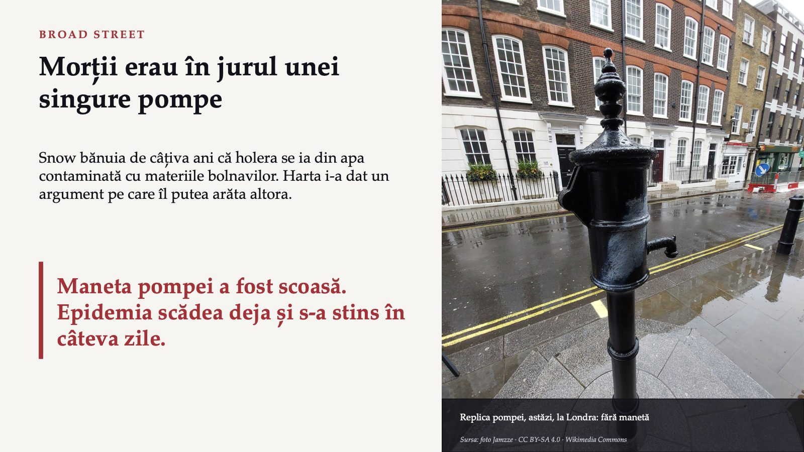
23 / 45Pe hartă s-a văzut limpede că morții erau grupați în jurul unei singure pompe. După ce Snow și-a prezentat constatările autorităților cartierului, maneta a fost scoasă. Epidemia scădea deja, iar în câteva zile s-a stins.
De câte ori mai mare a fost riscul de deces prin holeră în casele cu apă luată din aval?
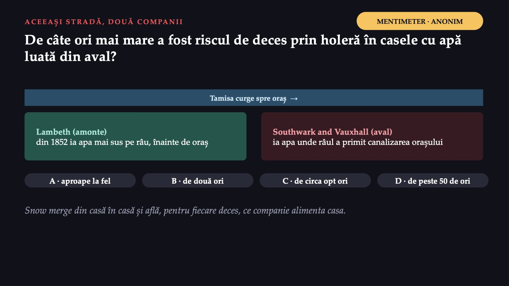
24 / 45Londra era alimentată de mai multe companii private, iar în unele cartiere două companii aveau țevi pe aceleași străzi. Pe aceeași stradă, casa din stânga putea bea apă curată, iar casa din dreapta apă cu canalizare.
Riscul de deces: de circa opt ori mai mare
![CE A NUMĂRAT SNOW Riscul de deces: de circa opt ori mai mare Apă din aval · Southwark and Vauxhall 4,2 Apă din amonte · Lambeth 0,5 decese prin holeră la 1 000 de persoane, vara anului 1854 Fără microscop Nimeni nu știa ce microb provoacă holera. Snow a numărat bolnavii și a comparat grupuri de oameni asemănători. Casele și oamenii erau asemănători; diferența principală era compania care le aducea apa. În număr de morți, raportul a fost de circa 5 la 1 (419 față de 80), dar populațiile erau diferite; de aceea comparăm riscul la 1 000 de persoane. Sursa: calculul din notele cursului, pe datele lui John Snow (cartierele alimentate de ambele companii).](diapozitive/C01/025.jpg) 25 / 45
25 / 45În casele care primeau apă din aval au murit de holeră aproximativ patru oameni din fiecare mie; în casele cu apă din amonte, aproximativ unul din fiecare două mii: riscul de deces a fost de circa opt ori mai mare. În număr de morți, raportul a fost de circa 5 la 1 (419 față de 80), dar populațiile erau diferite. Investigația lui Snow a precedat cu aproape trei decenii identificarea microbului holerei de către Robert Koch.
Epidemiologia
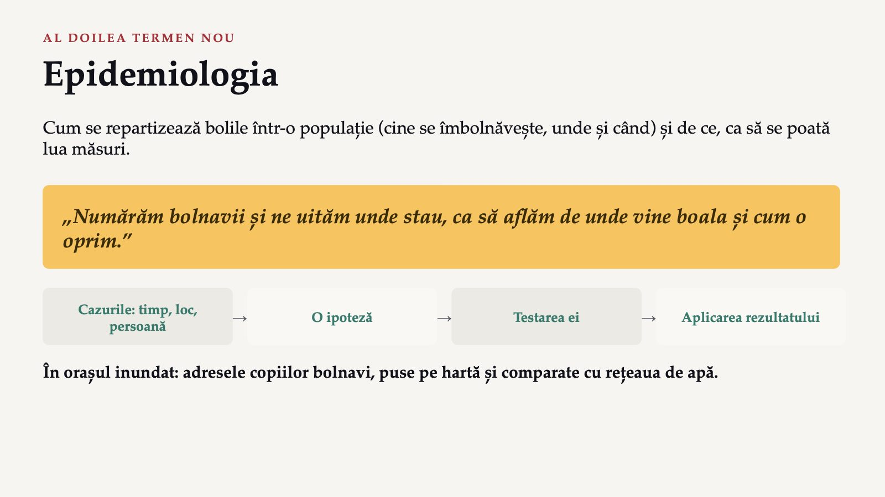
26 / 45Rădăcinile epidemiologiei duc până la Hipocrate, dar la Snow ea capătă forma folosită și astăzi.
Ați fi scos maneta pompei?
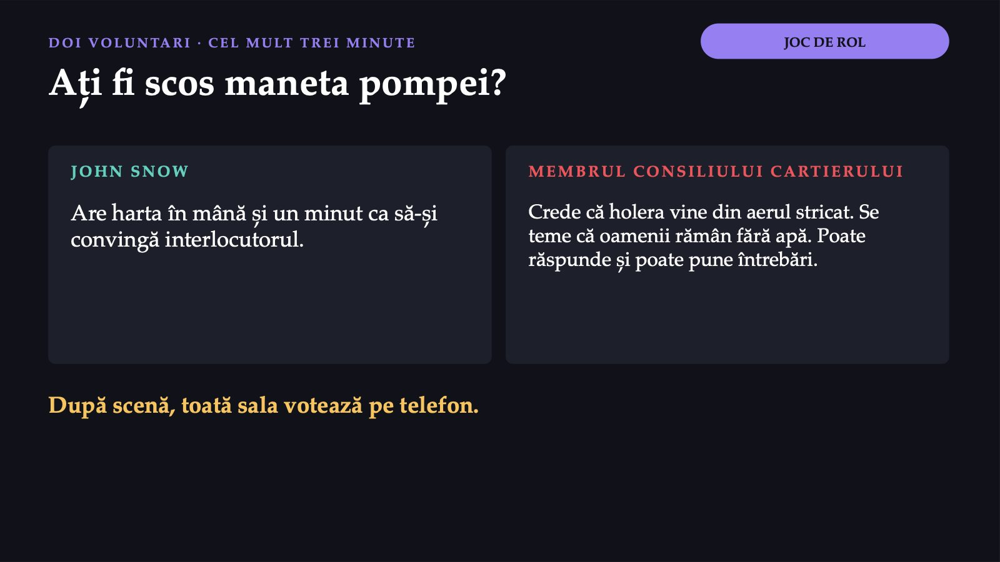
27 / 45Primul voluntar îl joacă pe John Snow, cu harta în mână. Al doilea joacă un membru al consiliului cartierului, convins că holera vine din aerul stricat.
Un argument bun nu este suficient
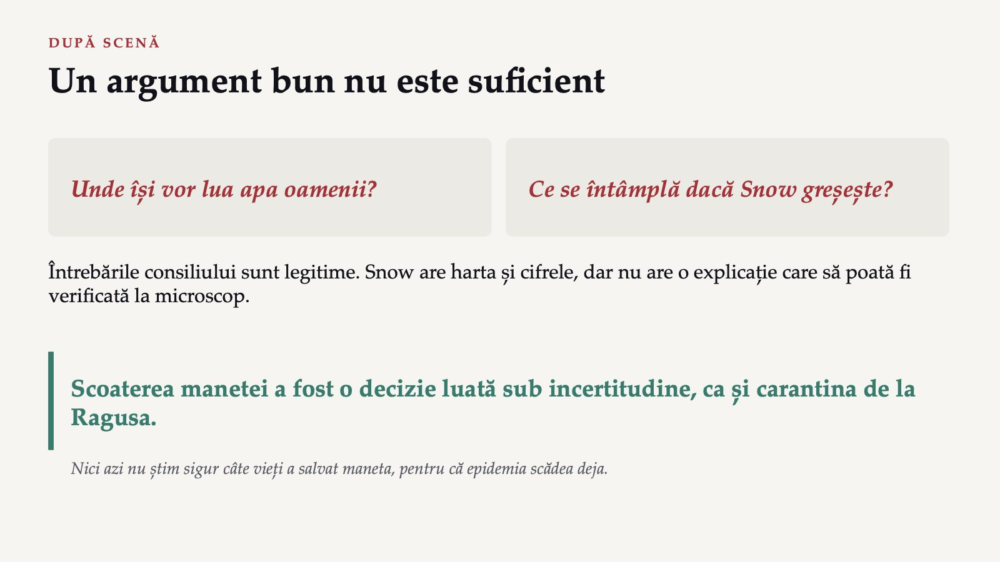
28 / 45De obicei, scena arată că un argument bun nu este suficient. Nici azi nu știm sigur câte vieți a salvat maneta, pentru că epidemia scădea deja.
32 → 2
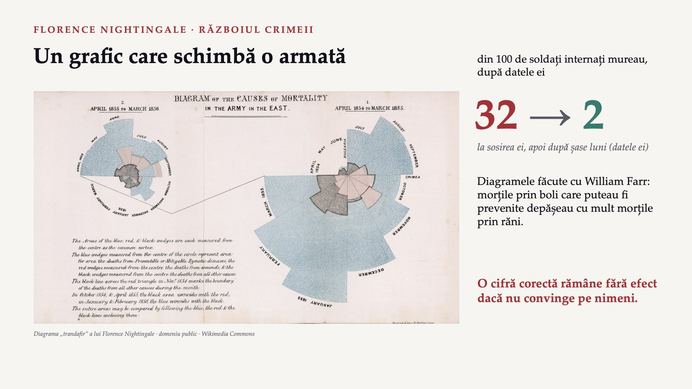
29 / 45În noiembrie 1854, Florence Nightingale a ajuns la spitalul armatei britanice din Turcia cu o echipă de asistente. Snow și Nightingale au făcut același lucru: au numărat, au comparat și au arătat rezultatul într-o formă pe care o înțelegeau și cei care nu erau medici. Cifrele diferă după sursă: după propriile ei date, aproximativ 32 din 100 de soldați internați mureau la sosirea ei și aproximativ 2 după șase luni; manualul lui Tulchinsky și Varavikova dă 44 din 100 la sosire și 2 din 100 până la sfârșitul războiului, nu în șase luni.
8 mai 1980
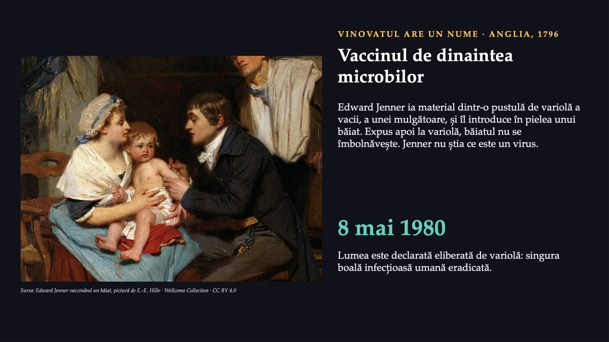
30 / 45Jenner și-a publicat rezultatele în 1798. Cuvântul vaccin vine din latinescul pentru vacă. Jenner știa doar, din observație, că mulgătoarele care făcuseră variola vacii nu făceau variola.
Trei oameni schimbă felul în care înțelegem boala
![A DOUA JUMĂTATE A SECOLULUI AL XIX-LEA Trei oameni schimbă felul în care înțelegem boala Foto: Paul Nadar · domeniu public Louis Pasteur 1861: microbii nu apar de la sine. 1881: vaccinul împotriva antraxului, încercat public pe 50 de oi. Sursa: Wellcome Collection · CC BY 4.0 Joseph Lister 1867, în The Lancet: soluții diluate de acid carbolic, care omoară microbii, pe răni și pe pielea pacientului înainte de incizie. Domeniu public Robert Koch 1882: microbul tuberculozei. 1883: microbul holerei, vinovatul din pompa lui Snow. Portretele: Wikimedia Commons.](diapozitive/C01/031.jpg) 31 / 45
31 / 45Lister a citit lucrările lui Pasteur și s-a întrebat dacă infecțiile care îi omorau pacienții după operații nu veneau tot de la microbi. Holera lui Snow avea, în sfârșit, un vinovat vizibil la microscop.
Teoria germenilor
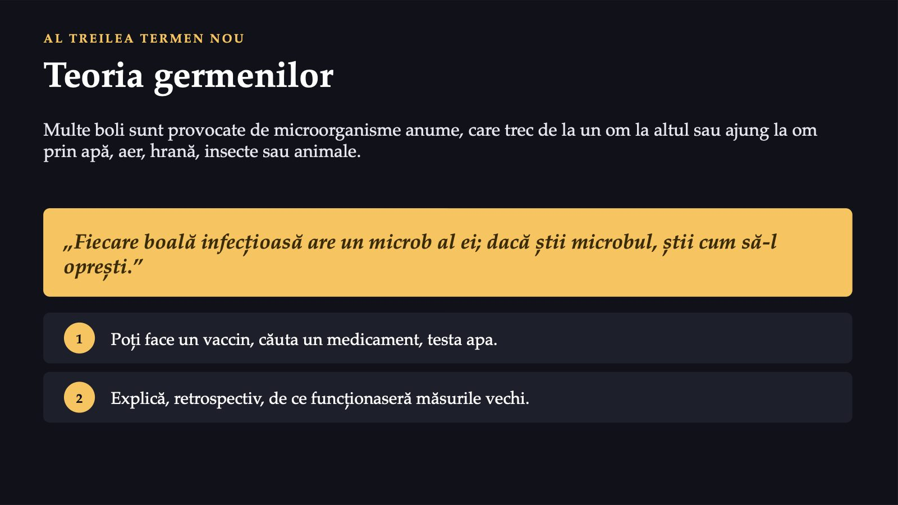
32 / 45Exemplul lui Koch: microbul holerei, găsit în intestinul bolnavilor, explică de ce apa cu canalizare din Londra îi îmbolnăvea pe cei care o beau.
Alegeți o măsură veche și explicați-o în limbajul teoriei germenilor
33 / 45Încercați să spuneți ce face microbul și cum îl oprește măsura aleasă.
Măsurile vechi, explicate de microbi
 34 / 45
34 / 45Carantina funcționa pentru că perioada de așteptare depășea timpul de incubație al bolii și lăsa să moară puricii infectați care transmit ciuma. Scoaterea manetei avea sens pentru că apa pompei era contaminată. Ambele perspective, cea a microbului și cea a mediului, au contribuit la sănătatea publică.
23 la 1
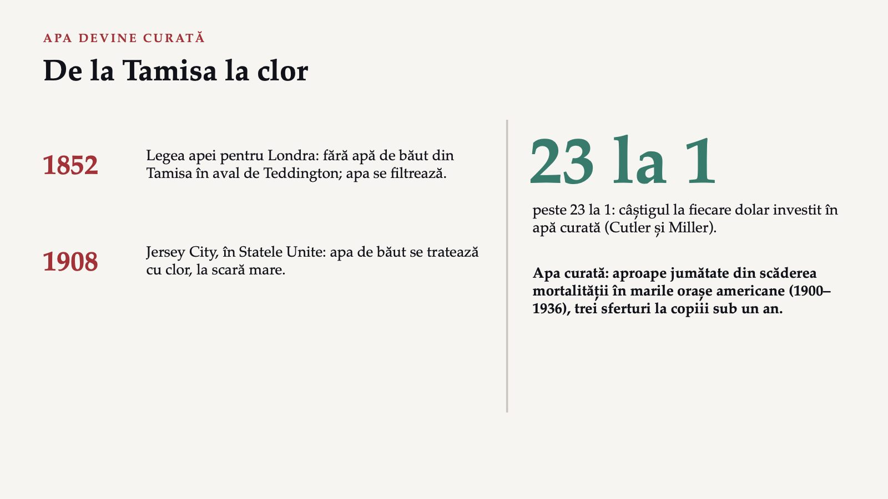
35 / 45Apa de la robinetul vostru vine dintr-un lanț care începe cu apeductele Romei, trece prin raportul lui Chadwick și harta lui Snow și ajunge la clorul de la Jersey City. Între a doua jumătate a secolului al XIX-lea și prima jumătate a secolului al XX-lea s-au pus bazele organizării sănătății publice: tratarea apei, îndepărtarea deșeurilor, controlul alimentelor și vaccinuri mai bune.
50 de milioane
 36 / 45
36 / 45Pandemia de gripă din 1918–1919 a infectat aproximativ 500 de milioane de oameni, o treime din populația lumii. Metoda lui Snow, numărarea și compararea unor grupuri de oameni, se aplica acum unor boli fără microb.
Așezați momentele în ordinea în care s-au petrecut
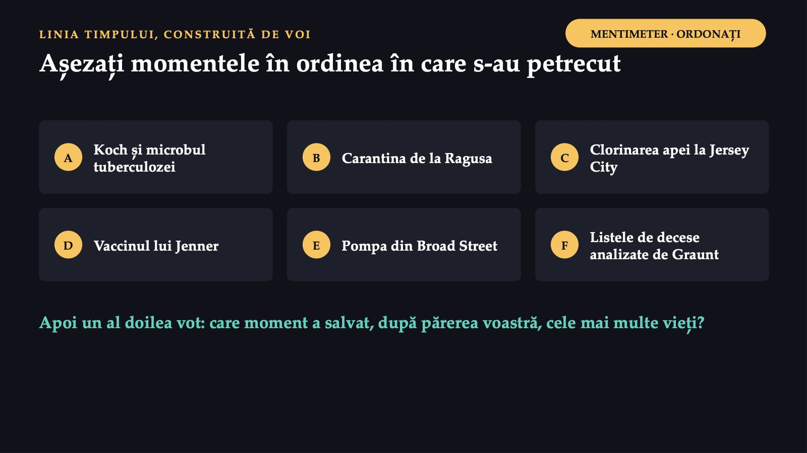
37 / 45Fiecare așază momentele pe telefonul propriu. Ecranul arată ordinea medie a tuturor răspunsurilor.
Sănătatea publică, cu un pas înaintea științei
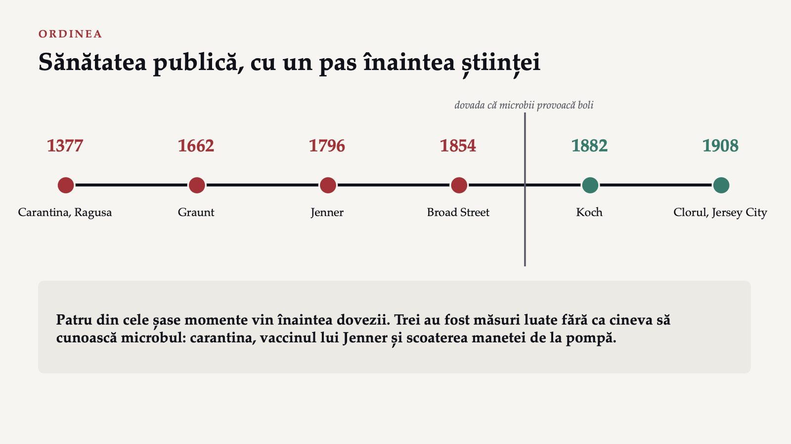
38 / 45Ordinea contează mai puțin decât ce arată ea. Sănătatea publică a acționat, de cele mai multe ori, cu un pas înaintea științei care avea să-i explice succesele.
„Trăim mult mai mult decât străbunicii noștri datorită spitalelor și medicamentelor moderne.”
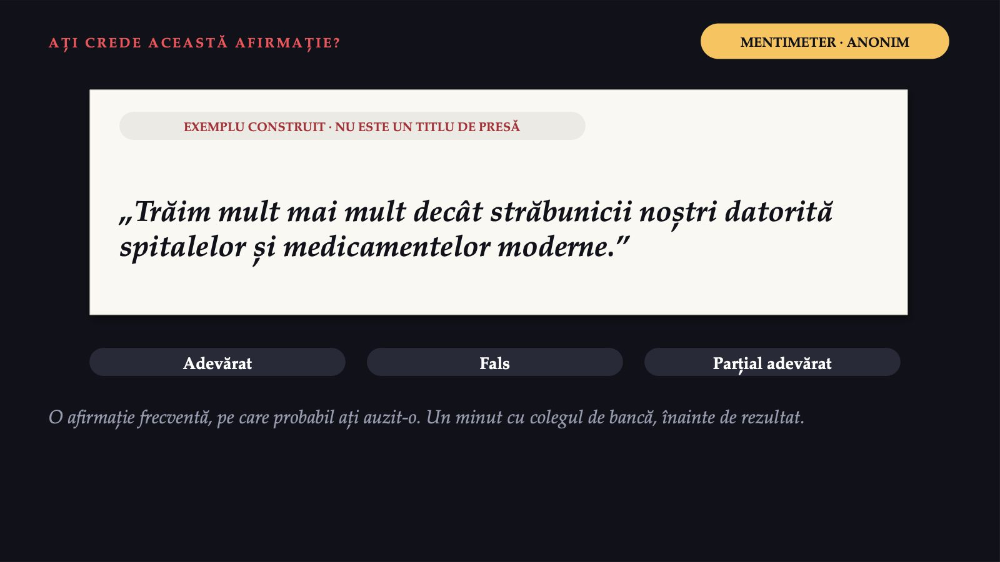
39 / 45Afirmația este construită pentru curs, dar o auzim des. Votați întâi, apoi discutați cu colegul de bancă.
Cei mai mulți ani au venit din sănătatea publică
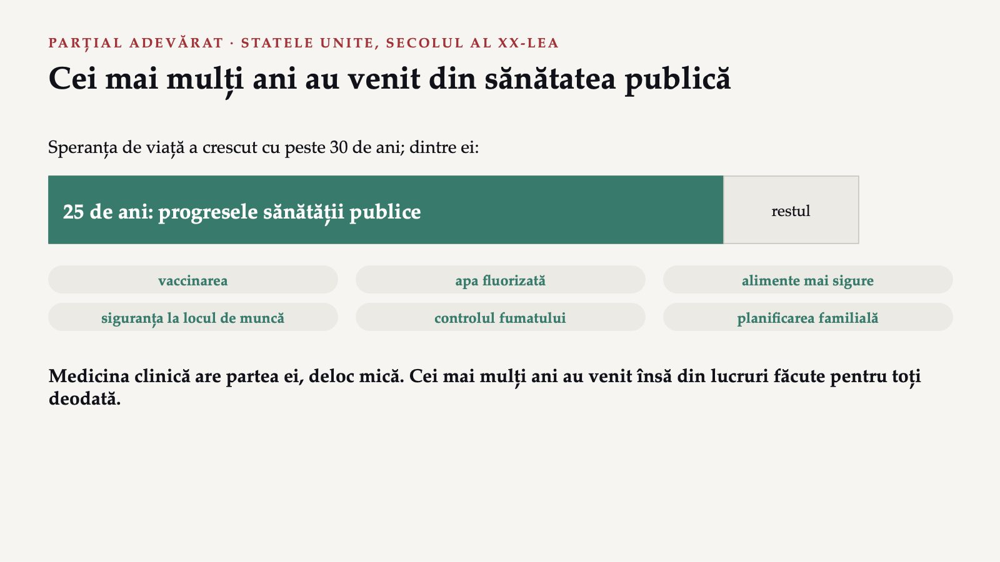
40 / 45Centrele americane pentru controlul bolilor au estimat că, din 1900 până la sfârșitul secolului, speranța de viață în Statele Unite a crescut cu peste 30 de ani, dintre care 25 se datorează progreselor sănătății publice.
Același oraș inundat, în trei epoci
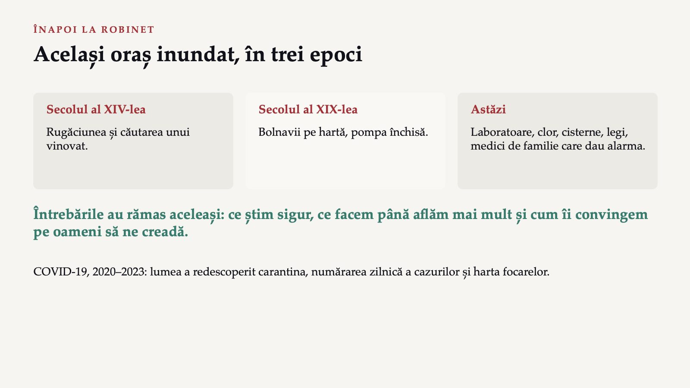
41 / 45Între cele două date ale pandemiei, lumea a redescoperit și controversele despre echilibrul dintre libertatea fiecăruia și protecția tuturor, adică exact uneltele și dilemele din această ședință.
Aceleași unelte, probleme noi
![PATRU PROVOCĂRI CARE RĂMÂN Aceleași unelte, probleme noi Cooperarea între țări Regulamentul Sanitar Internațional, modificat în 2024, în vigoare din 19 septembrie 2025. Microbii rezistenți Antibioticele nu sunt o victorie definitivă. OMS: se urmărește rezistența și consumul de antibiotice în îngrijirea medicală, în sectorul veterinar și în agricultură. O singură sănătate Oamenii, animalele și mediul, împreună: un plan comun pentru 2022–2026. Încrederea 13,5 milioane de copii fără nicio doză de vaccin în primul an de viață (2025).](diapozitive/C01/042.jpg) 42 / 45
42 / 45Ce era la Ragusa regula unui singur port a devenit un regulament internațional. Vaccinul lui Jenner are peste două secole, iar întrebarea cum convingi o comunitate să-l folosească rămâne actuală.
Ce vă vine acum în minte când auziți „sănătate publică”?
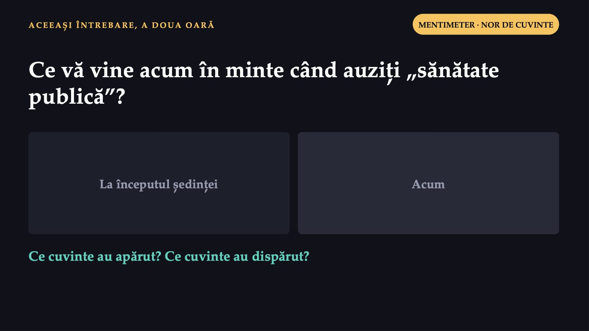
43 / 45Un singur cuvânt, ca la început. Comparați cei doi nori.
Ce faceți diferit
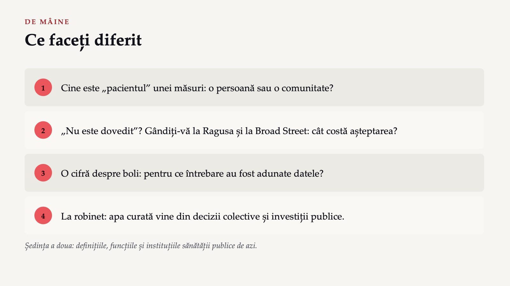
44 / 45În ședința a doua veți afla, între altele, cine anume ar trebui să acționeze în orașul inundat și pe ce lege se sprijină.
Trei întrebări pentru final
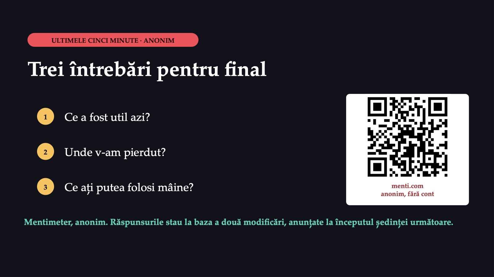
45 / 45Trei întrebări, anonim, pe Mentimeter, prin codul QR. Răspunsurile stau la baza a două modificări, anunțate la începutul ședinței următoare.
Săgeți sau spațiu: navigare · O: vedere de ansamblu · N: notele prezentatorului · F: ecran complet · Esc: închidere